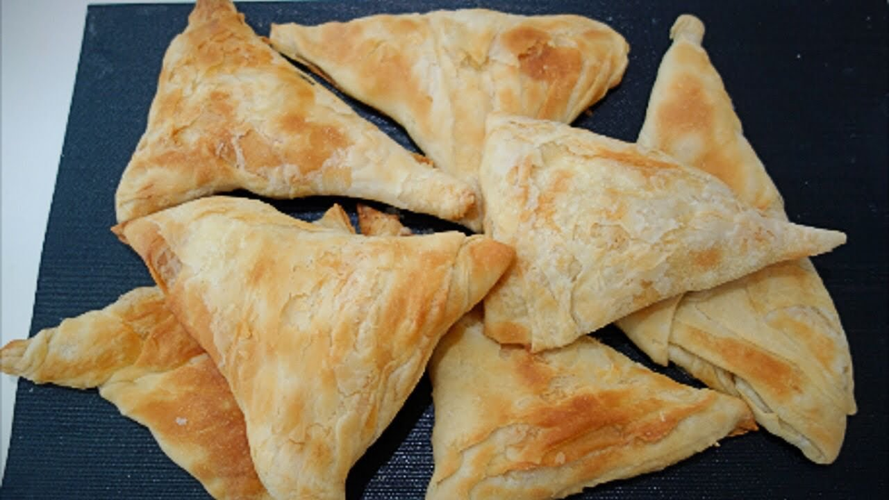

1 diena (spalio 30, penktadienis): atvykimas į Tiraną
🛏️ Nakvynė: Tirana (centras, netoli Skanderbego aikštės)

🍴 Vakarienė ir vakaro programa
- Xheni Fast Food (~€5/asm.) – šeimos užkandinė Bloku kvartale, fasulė, pilafas, kepintos daržovės. Žemėlapyje
- Byrek Special „Luani“ (~€3/asm.) – šviežias byrek, gerai pakeliui ryte prieš išvykimą. Žemėlapyje
- Komiteti – Kafe Muzeum – baras-muziejus su komunistinės epochos interjeru ir 18 rūšių raki, verta užsukti vien dėl atmosferos. Žemėlapyje
2 diena (spalio 31, šeštadienis): Tirana → Beratas ir Osumo kanjonas
🛏️ Nakvynė: Beratas


🍴 Pietūs ir vakarienė Berate
- Restorant Mangalemi (~€10/asm.) – akmeninis pastatas su terasa į pilies kalvą, kepta upėtakio žuvis. Žemėlapyje
- Eni Traditional Food (~€8/asm.) – šeimyninė taverna prie Goricos tilto, rūkytos kofte, troškinti baklažanai. Žemėlapyje
- Ballkoni Gorices (~€9/asm.) – vaizdas į Goricos tiltą, gera vieta vakarienei saulėlydžio metu. Žemėlapyje
3 diena (lapkričio 1, sekmadienis): Beratas → Gjirokastra
🛏️ Nakvynė: Gjirokastra

🍴 Pietūs ir vakarienė Gjirokastroje
- Kujtimi (~€8/asm.) – šeimos taverna pačiame bazare, kepta ėriena, qofte, vynlapiai. Žemėlapyje
- Taverna Tradicionale Kardhashi (~€8/asm.) – gausios porcijos, UNESCO senamiesčio atmosfera. Žemėlapyje
- Restorant Tradicional Urat (~€8/asm.) – šeimos valdoma taverna, gera alternatyva vakarienei. Žemėlapyje
4 diena (lapkričio 2, pirmadienis): Gjirokastra → Tiranos oro uostas
✈️ Grįžtamasis skrydis TIA→WAW 19:05
🍴 Pietūs Fieryje
- Bar Restorant Egnatia (~€9/asm.) – trijų brolių šeimos restoranas su tradiciniais albanų receptais, patogu pakeliui į oro uostą. Žemėlapyje
Žemėlapis
Biudžeto apžvalga
Visos sumos – 4 keliautojams, 3 nakvynėms, su nuomotu automobiliu.
| Kategorija | Min | Tikėtina | Max | Pastabos |
|---|---|---|---|---|
| Skrydžiai WAW↔TIA (4 žm.) | €207 | €337 | €450 | Atitinka tvarkaraštį (WAW 18:30→TIA 20:30; TIA 19:05→WAW). Rezervuoti anksčiau, kainos kyla. |
| Automobilio nuoma | €140 | €160 | €230 | Karruka kaina be papildomo draudimo – patikrinti, ar įskaičiuotas pilnas draudimas. |
| Nakvynės (3 naktys, 2 kambariai) | €197 | €359 | €482 | Tirana / Beratas / Gjirokastra – kainos nepatvirtintos konkrečioms datoms. |
| Maistas (4 žm., visos dienos) | €204 | €248 | €296 | Pagal šiame plane siūlomas užeigas. |
| Įėjimo bilietai (pilys, 4 žm.) | €16 | €24 | €36 | Berato ir Gjirokastros pilys – tik grynaisiais (lekais). |
| Degalai | €75 | €96 | €126 | ~585 km maršrutu, dyzelinas ~€2.35/l. |
| Viso (4 keliautojai) | €839 | €1 224 | €1 620 | |
| Vienam asmeniui | ~€210 | ~€306 | ~€405 |
Į ką atkreipti dėmesį
- Patvirtinkite nakvynių rezervacijas iš anksto – kainos ir kambarių talpa 4 žmonėms konkrečioms datoms dar nepatikrinta.
- Paklauskite Karruka, ar į €140 kainą jau įskaičiuotas pilnas draudimas.
- Pasiimkite grynųjų lekų – pilių bilietai ir Berato pilies mokestis priimami tik grynaisiais.
Automobilio nuoma
Karruka Rent a Car Rinas
Kompaktinis krosoveris (Dacia Duster / Opel Crossland klasė), 5 vietos, talpi bagažinė 4 žmonių bagažui.
Viena aukščiausiai vertinamų nuomos įmonių Tiranoje, geriausia kaina už klasę ir patogus pasitikimas net vakariniu skrydžiu (atvykimas 20:30).
Atsiėmimas: Tiranos oro uostas (TIA) – nemokamas pasitikimas atvykimo salėje, trumpas pervežimas iki biuro.
RezervuotiRent Car Tirana
Kompaktinis krosoveris, 5 vietos, didelis bagažinės tūris.
Tobulas 5.0/5 įvertinimas, politika „be depozito“ sumažina riziką susidurti su netikėtais mokesčiais atsiimant automobilį vėlai vakare.
Atsiėmimas: Tiranos oro uostas (TIA) – nemokamas pasitikimas atvykimo salėje.
RezervuotiSixt Tirana Airport
Kompaktinis SUV/krosoveris, 5 vietos (pvz. Škoda Karoq ar panaši klasė).
Tarptautinis prekės ženklas su skaidriomis sąlygomis ir pagalba 24/7 – aukštesnė kaina mainais į didesnį saugumą ir lankstumą grąžinant prieš skrydį.
Atsiėmimas: Tiranos oro uosto terminalas – Sixt stendas, registratūra 24/7.
RezervuotiKur pavalgyti
| Diena | Vieta | Prie ko | Tipas | Kaina/asm. | |
|---|---|---|---|---|---|
| 1 | Xheni Fast Food | Viešbutis, Bloku kvartalas | Užkandinė | ~€5 | Žemėlapyje |
| 1 | Byrek Special „Luani“ | Viešbutis, Skanderbego aikštė | Byrektorė | ~€3 | Žemėlapyje |
| 2 | Restorant Mangalemi | Berato senamiestis | Tradicinė taverna | ~€10 | Žemėlapyje |
| 2 | Eni Traditional Food | Goricos kvartalas | Tradicinė taverna | ~€8 | Žemėlapyje |
| 2 | Ballkoni Gorices | Goricos tiltas | Taverna su vaizdu | ~€9 | Žemėlapyje |
| 3 | Kujtimi | Gjirokastros bazaras | Šeimos taverna | ~€8 | Žemėlapyje |
| 3 | Taverna Tradicionale Kardhashi | Gjirokastros senamiestis | Tradicinė taverna | ~€8 | Žemėlapyje |
| 3 | Restorant Tradicional Urat | Gjirokastros senamiestis | Tradicinė taverna | ~€8 | Žemėlapyje |
| 4 | Bar Restorant Egnatia | Fier | Šeimos restoranas | ~€9 | Žemėlapyje |
Specialūs barai
- Komiteti – Kafe Muzeum (Tirana, 1 diena) – baras-muziejus komunistinės epochos interjere, 18 rūšių raki. Žemėlapyje
Ką paragauti

Tavë kosi
Albanijos nacionalinis patiekalas – ėriena, kepta su jogurto, kiaušinių ir sviesto užpilu.
€6–9
Kur paragauti: Restorant Mangalemi, Kujtimi, Taverna Tradicionale Kardhashi

Byrek
Sluoksniuota tešla su sūrio, spinatų ar mėsos įdaru – populiariausias albanų užkandis.
€1–3
Kur paragauti: Byrek Special „Luani“, Xheni Fast Food

Fërgesë
Keptos paprikos ir pomidorai su varškės tipo sūriu – kreminis troškinys, dažnai patiekiamas kaip priedas.
€3–6
Kur paragauti: Eni Traditional Food, Ballkoni Gorices, Restorant Tradicional Urat

Qofte
Keptos mėsos kotletėlės su prieskoniais – klasikinis kasdienis patiekalas.
€3–6
Kur paragauti: Xheni Fast Food, Kujtimi, Bar Restorant Egnatia
Sufllaqe
Albaniškas kebabo tipo užkandis – kepta mėsa, daržovės ir padažas lavaše, greitas gatvės maistas.
€2–3
Kur paragauti: Xheni Fast Food

Qifqi
Gjirokastros specialitetas – apkepti ryžių ir kiaušinių kukuliukai su mėtomis, kitur Albanijoje nerasite.
€3–5
Kur paragauti: Kujtimi, Taverna Tradicionale Kardhashi, Restorant Tradicional Urat
Troftë e pjekur
Šviežia upėtakio žuvis iš kalnų upių, kepta ant grilio su citrina ir žolelėmis – Berato apylinkių specialybė.
€8–12
Kur paragauti: Restorant Mangalemi
Praktinė informacija
- Skrydis į Albaniją
- WAW → TIA, atvykimas apie 20:30 (spalio 30 d.)
- Skrydis atgal
- TIA → WAW, išvykimas 19:05 (lapkričio 2 d.)
- Automobilio grąžinimas
- Tiranos oro uoste, ne vėliau kaip ~17:00 lapkričio 2 d.
- Grupės vadovas
- [vardas, tel. nr.]
- Nuomos įmonės kontaktas
- [tel. nr. iš patvirtinimo laiško]
- Nakvynių rezervacijos
- [patvirtinimo numeriai / kontaktai]